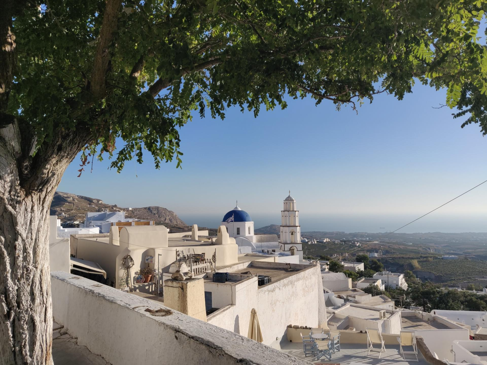
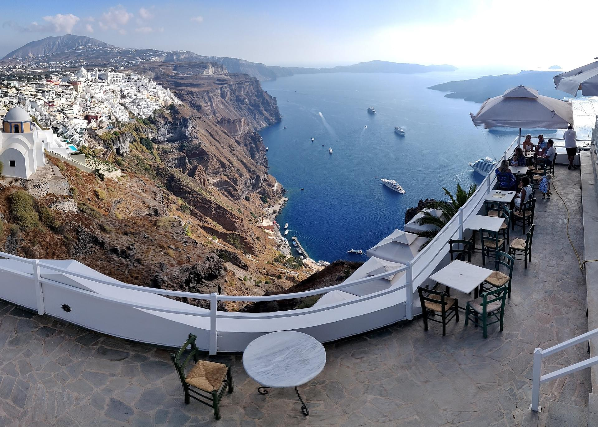
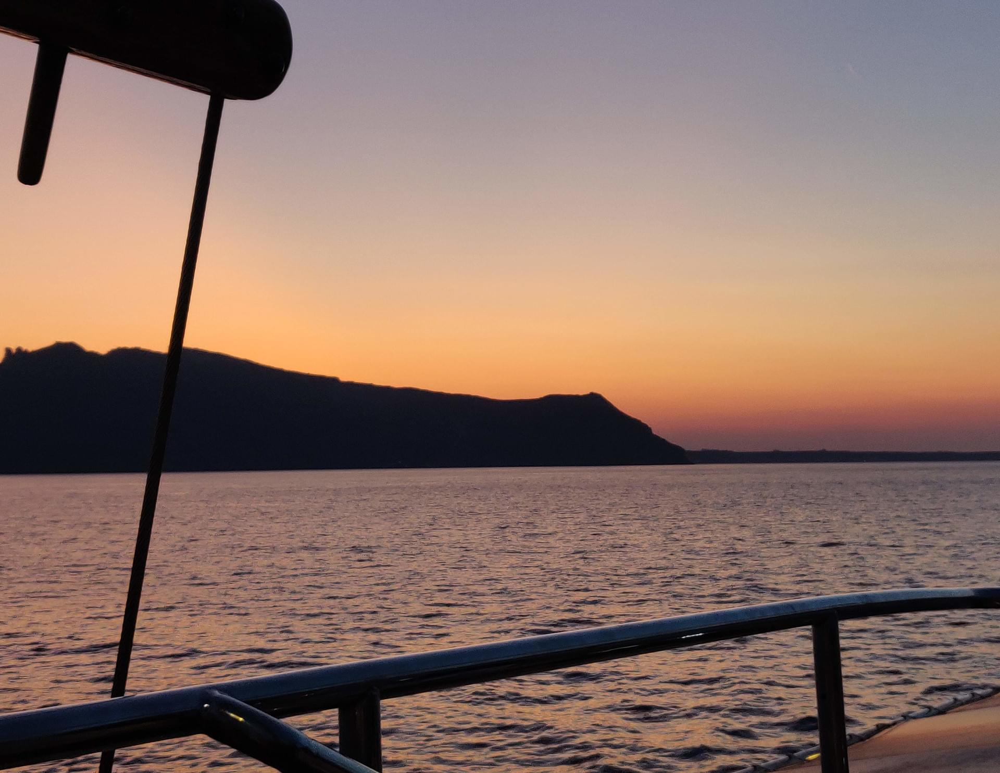
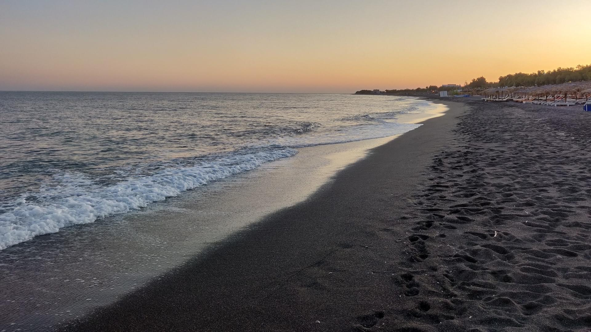
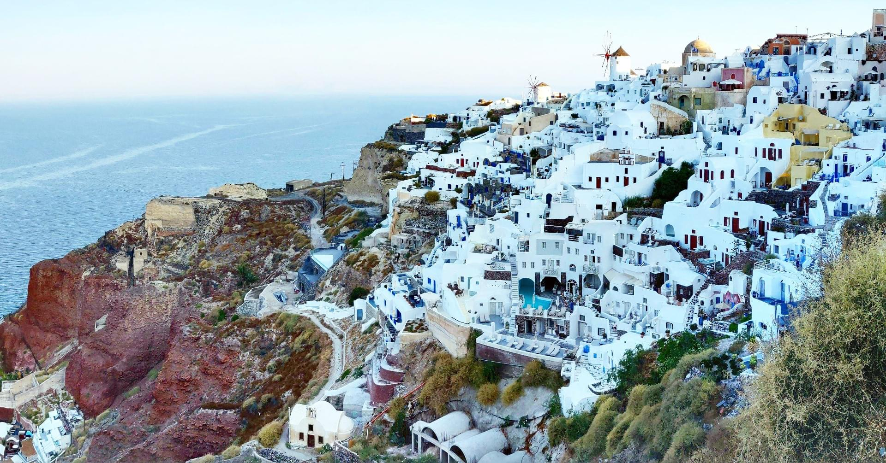
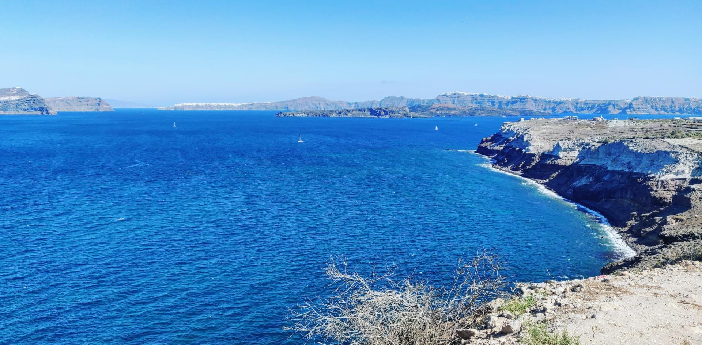

For our first real vacation together, my boyfriend and I decided to fly to Greece. More specifically, to one of the most expensive islands there: Santorini.
Why?
We deserved it.
We thought it was time to treat ourselves better, after a very difficult year.
We reserved a room, breakfast included, at a 4 star hotel (Santomiramare Beach Resort) for a week in September. We rented a car to move around freely and…
It went very well.
We didn’t have even a fight.
Anyway
I’m going to write about the magic of Santorini.
Seaside, romantic sunsets, and wait… there is more.
Santorini is a nice half-moon shaped volcanic Island. The coast varies from rocky cliffs to black sand beaches. We opted for the latter by booking a room in a hotel in the southern part of the Island not far from Perissa.
It happened to be the best decision. We had time in the morning to relax on the sand, swim in the sea (or in the pool), and, after a shower, spend the afternoon exploring the rest of the Island.
Pyrgos
The first day, we went to the historic village of Pyrgos. It is a very quiet place. It was so quiet that we thought we were too off season. We discovered later that Pyrgos is the one of the less touristy part of the island.
Anyway, we walked among the typical white houses almost without meeting anyone. There, up the hill, we saw our first sunset.

Thira
Thira is where all the famous pictures are from. It stands at the top of the cliff, over a small port where cruises disembarks hundreds of tourists everyday. A cable car brings them up in the heart of the small city.
The view from Thira is amazing; you can appreciate it wherever you go, even from many restaurants. We decided to eat in one of them sitting in the first row admiring the panorama.
We walked so much that day that, without even noticing, we ended up in the nearby village of Firostefani. We sat there contemplating the view, while drinking a fresh smoothie.
We headed to Imerovigli, but the traffic was so terrible that we didn’t manage to find a parking spot. That’s why we decided to enjoy our second sunset on the main road out of Thira.

The boat tour
We wanted to spend some time on a boat. There are plenty of options, but we made the mistake to not inform ourselves about them in advance. So, we ended up asking for advice at the hotel reception. We chose a 75 euro romantic trip with dinner and sunset viewing.
Given the romantic nature of the event (there was romantic in the title), I had some expectations:
a big boat, with a small number of couples having dinner at their own table…
Well, while the boat was a well curated sailing ship, the tables were shared, fitted with benches, and not enough for everyone. Not the romantic experience I was looking for.
The ship made 4 stops. First, the volcano Kameni, with the opportunity to hike up to the top (good shoes are a must) while learning the history of the island from the guide. Second, the hot springs (much more “warm springs”), which required a 30 meters swim to get to from the boat, as it can only get as far. Then, the port of Thirasia, the island in front of Santorini; there we swam in very clear water, and had a nice, even if not fancy, dinner. Last, we headed to the waters in front of Oía to enjoy, yet another wonderful sunset in the company of many other boats (a jacket is another must, because, after the sun is gone, the cold wind would blows your skin away, “literally”).
Even if it wasn’t what we were expecting, in the end I wasn’t THAT disappointed.

Perissa
Even if we didn’t dedicate a day to Perissa, we ended up spending time there everyday for dinner. We just walked around to find an attractive greek restaurant.
After the boat trip we were very tired so we spent a day between beach and pool. Later that day, we decided to spend a bit more time in the city center. It wasn’t that crowded. We could easily walk around and find a place in every restaurant (maybe it was low season after all). The restaurants there are very good. Really nice service and romantic set ups. Most importantly, the food is delicious. I still miss it sometimes. We had to wait maybe half an hour, but everything was fresh, and made with love. I have never been so excited for such a long wait for food.

Oía
Oía is the most magical and beautiful place in the island. I guess it’s not a case that the most expensive luxury hotels are up on its cliff. We were advised by our car rental consultant to go there before sunrise or after sunset, to be sure to find a parking spot. We opted for the first one.
We woke up very early that day, and stopped on the road to see the sunrise. We enjoyed that romantic moment, ignoring all the other 5 couples. Ten minutes before sunrise the road started to get busy. That’s why, soon after, we felt a urging instinct to go. When we arrived at the parking it was empty and, of course, we were super happy about it (us fools).
We started walking, and, impressively, there were many people, for being 7:30 AM. We walked around looking for breakfast, but sadly everything was still closed. We finally, found Vitrin. We had an amazing waffle and coffee, getting us ready to explore the city:
- The bookshop Atlantis. It is a must.
- The ruins. Walking around was delightful.
- The two windmills. These are iconic parts of the city.
- Lunch with a view. It never gets old.
One morning was enough to see everything. We were ready after lunch to go back and relax at the hotel, but there the nightmare began. The parking was full. It was SO full that the entrance was closed from some quads (stupid people). While getting out of there, with people eager to get our spot, we sweated a lot. The next problem was to get around the corner to the main way. Never saw so much traffic. Busses using the road as a parking lot, people driving in the wrong direction, impossible u-turns… Chaos. I still don’t know how we survived. (Claps for my boyfriend that drove the car)

Akrotiri
For our last day we decided to go to the southern tip of the coast before our flight. From the road going there you can see the whole island slowly popping out of the sea. At the end of the road stands a lighthouse. Luckily we parked not far way from the end of the road, as the road ends literally at the cliff. No u-turn possible there. Sadly the lighthouse wasn’t accessible, but you can walk all around, up and down the cliff. By the way, the panorama is worth it.

Last but not least
The point of this vacation was to relax, but we also managed to explore without stress or pressure. Of course we didn’t see everything. There is so much more, but I would say we saw the most important out of it.
Few suggestions
If you ever go to Santorini, be prepared to a few things; like the driving style. People in Santorini (or the whole Greece, I’m not sure) drive like crazy in those small roads they have. We really needed to be calm and confident to drive. If you are not interested in renting a car, there are other options like quads and mopeds, or public transportation.
You will notice a contrast between the fancy luxury hotels, cleaned and new, and the land next to them with abandoned trash, and unfinished houses. That hurts a bit. So many fields just let there to die behind enormous hotels.
Look out for the roads too; just a few were renewed and the others were full of holes or, in few points, dangerous to use with a normal vehicles.
When in Greece, try its cuisine (it’s one of my favorite ones now), sit in their colorful cozy restaurants, and, of course, enjoy its amazing sunsets and sunrises (get full of them).
The magic of the unlimited views, and romantic spots, faded away all the negative aspects.
You will get back home satisfied and rested.
Alessia Sorbo
2019-11-03